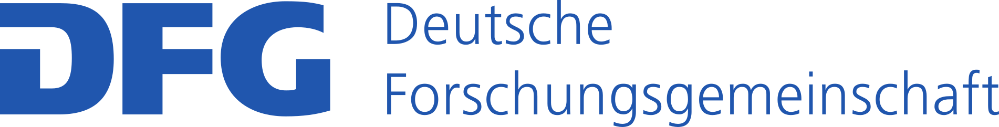

Current projects
OptimizationChat
Mathematische Optimierung auf Basis natürlichsprachlicher Interaktion: Industrierelevante Probleme formalisieren und lösen. Turning a real planning problem into an optimization model usually requires an expert dialogue between practitioners and modelers. OptimizationChat investigates how large language models can support and partly automate this dialogue, so that industrial planning problems can be formalized and solved through natural-language interaction. Joint project with Fraunhofer IOSB-INA and more than ten regional companies; I lead the Bielefeld sub-project.
Derivative-Free Decision-Focused Learning for Marine Biodiversity Conservation
Planning marine protected areas requires predictions, for example of species distributions, that feed into an optimization model. Instead of training these predictions for accuracy alone, the project trains them for the quality of the resulting protection decisions. The approach embeds learned models into a heuristic solution procedure and tunes both jointly, without requiring derivatives, and can handle uncertainty in constraints as well as in the objective. Principal investigator, jointly with Kevin Tierney.

Completed projects
Combining Graphical Optimization Models and Machine Learning for Planning and Scheduling under Uncertainty
The NRW Return Programme supports researchers returning from abroad in building their own independent research group in North Rhine-Westphalia. This grant funded the establishment of my Decision Analytics group at Bielefeld University. The project combines graphical optimization models (state-expanded networks and decision diagrams) with machine learning to solve planning and scheduling problems under uncertainty. It laid the foundation for most of my current research lines, from learning-enhanced network models and decision diagram bounds to data-driven shift scheduling and decision support in health care. Sole principal investigator.
Network models and decision diagrams Decisions under uncertainty
An AI-based System for the Rehabilitation of Cochlear Implant Patients
Interdisciplinary project with Franz Kummert, Ingo Todt and Christoph Kayser on algorithm-based hearing and speech therapy after cochlear implantation; I led one of the sub-projects.
Generic and Efficient Personnel Scheduling Approaches Based on State-Expanded Network Formulations
A general method for building state-expanded network models for personnel scheduling, framed as dynamic programming, together with exact and heuristic techniques to keep the networks small. The project also led to new work on decision diagrams.
New Coupling of Machine Learning and Optimization
Postdoctoral fellowship of the Institute for Data Valorization at Polytechnique Montréal.